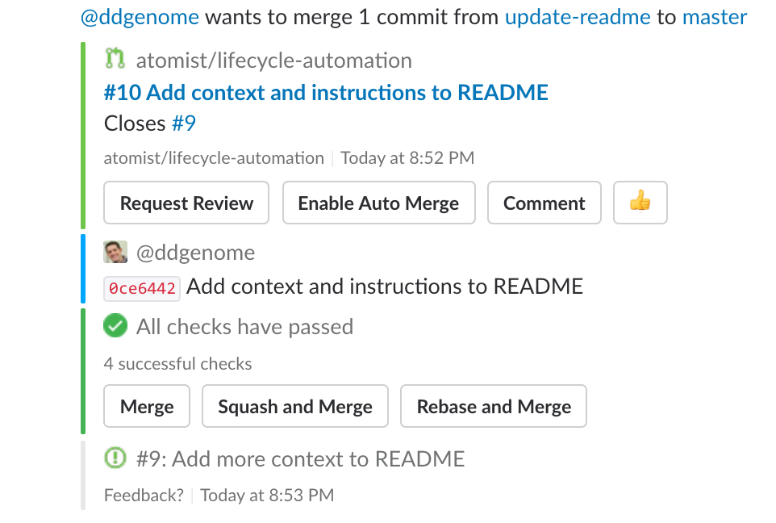

@atomist/lifecycle-automation

This project contains lifecycle automations that create beautiful,
correlated, and actionable Slack messages for issues,
pull requests, pushes, builds, and deployments using
the @atomist/automation-client node module to implement a
client that connects to the Atomist API.

This Atomist API client provides your team with better Slack messages about what is happening in your development and delivery lifecycle by simply adding the Atomist Bot to your Slack team:

Once the Atomist Bot is in your Slack team, invite it to a channel
where you discuss a repository and link the channel to the repository
using the repo command
/invite @atomist
@atomist repo owner=ORG repo=REPOreplacing ORG with your GitHub.com organization and REPO with the
name of the repo you want to link. Simply repeat for all the repos
and channels you want to link!
Support
General support questions should be discussed in the #support
channel on our community Slack team
at atomist-community.slack.com.
If you find a problem, please create an issue[
Contributing
If you are interested in contributing to the Atomist open source projects, please see our contributing guidelines and our code of conduct.
Development
You will need to have Node.js installed. To verify that the right versions are installed, please run:
$ node -v
v8.4.0
$ npm -v
5.4.1Build and Test
| Command | Reason |
|---|---|
npm install |
to install all the required packages |
npm run build |
lint, compile, and test |
npm start |
to start the Atomist automation client |
npm run autostart |
run the client, refreshing when files change |
npm run lint |
to run tslint against the TypeScript |
npm run compile |
to compile all TypeScript into JavaScript |
npm test |
to run tests and ensure everything is working |
npm run autotest |
run tests continuously |
npm run clean |
remove stray compiled JavaScript files and build directory |
Release
To create a new release of the project, simply push a tag of the form
M.N.P where M, N, and P are integers that form the next
appropriate semantic version for release. The version in
the package.json is replaced by the build and is totally ignored! For
example:
$ git tag -a 1.2.3
$ git push --tagsThe Travis CI build (see badge at the top of this page) will publish the NPM module and automatically create a GitHub release using the tag name for the release and the comment provided on the annotated tag as the contents of the release notes.
Created by Atomist. Need Help? Join our Slack team.